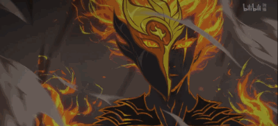
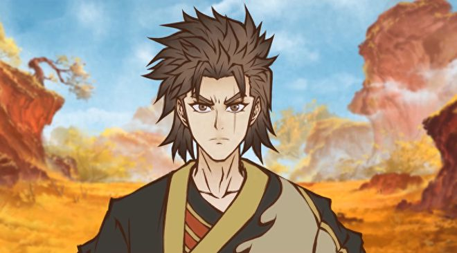
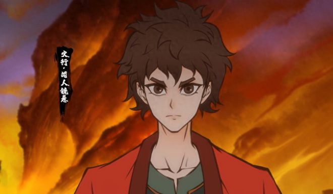
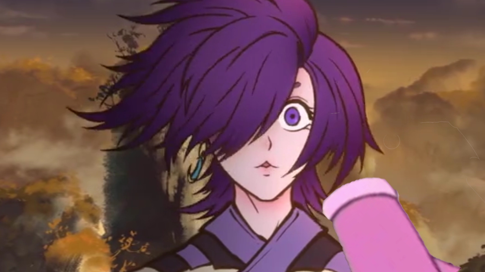
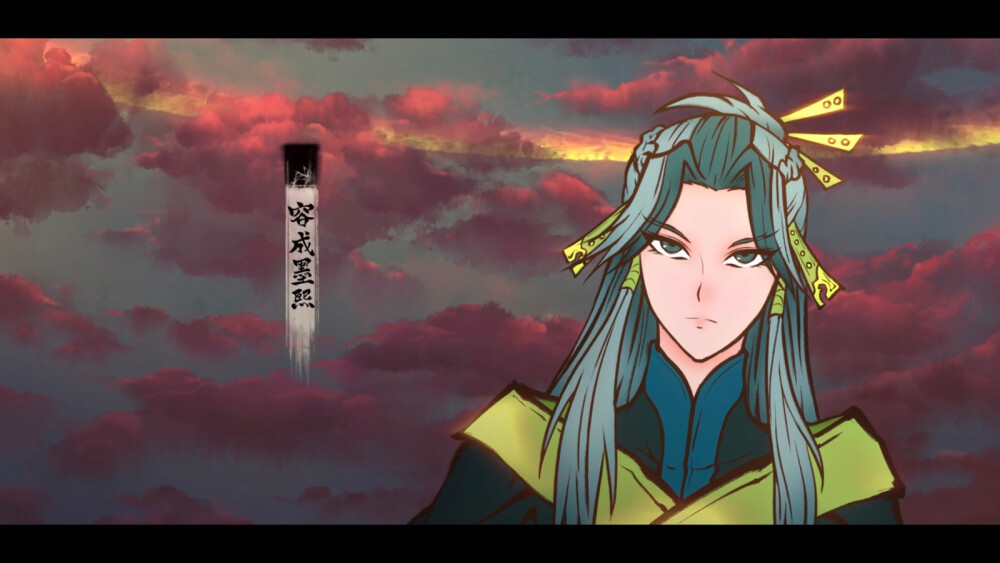
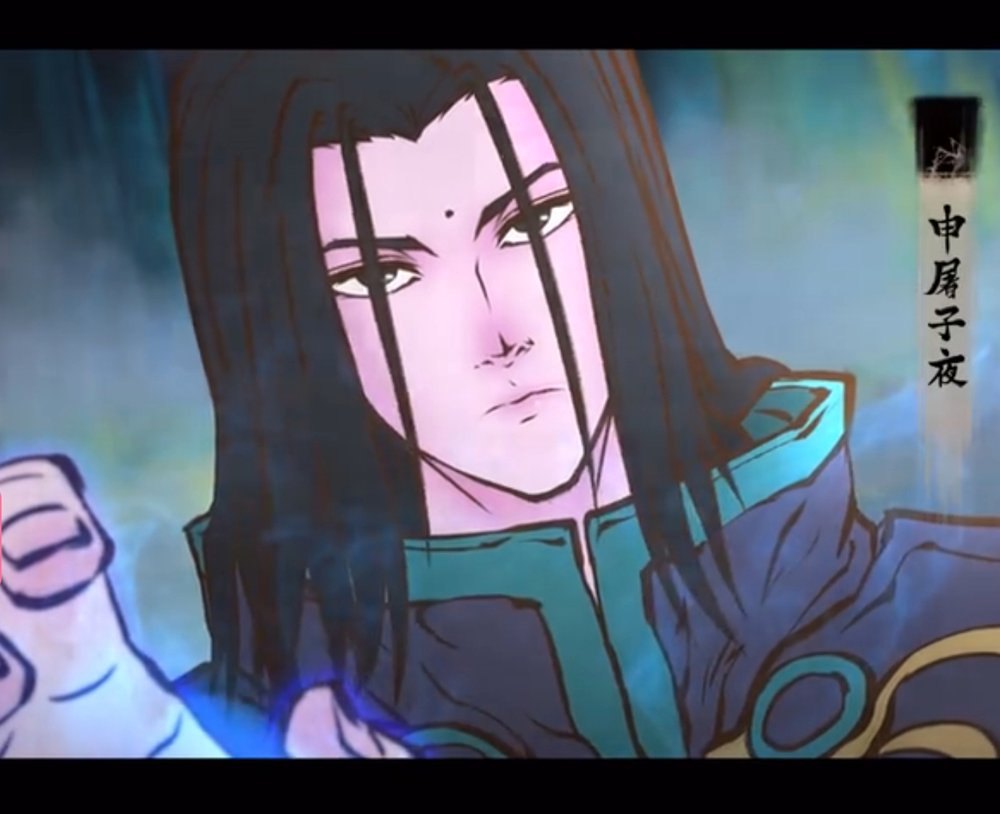
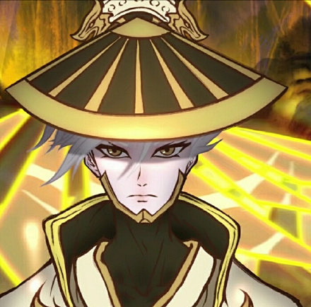

 雾山五行角色简介
| 图片 | 简介 |
|---|---|
|  | 闻人翊悬 配音：郭盛 简介：原雾山五行中的火行，火行闻人家族成员，一出生就有家族中罕见的超强的火系属性，却无法很好的控制，经常闯祸。性格随性、张扬，带点痞性。表面亦正亦邪，骨子里却非常正义 。为取一物治疗母亲擅自解开封印并放出麒麟 ，交手不敌反致亲友被抓，被迫着手寻回走失的麒麟儿以归还（麒麟） ，在酒鬼张家中边烧陶边放养鸭子，此后一次在湖中洗澡与苏小安相遇 。 犀川幻紫林篇中受嗔兽孔雀的寄生蛊影响无法完全发挥实力进阶昭神，时常神智涣散痛苦不堪（最后自行解除蛊毒，一并冲破了五行驱逐印）。 |
|  | 闻人镜悬 配音：李兰陵 简介：火行闻人家族成员，闻人翊悬的弟弟，接替闻人翊悬成为雾山五行中的火行 ，擅长使用绿炎弹。性格孩子气的要强，有拼搏精神不喜寻求帮助，容易气恼冲动，平时谨慎细心。觉得自己不比兄长差却总也做不好，心底非常关心哥哥翊悬 |
|  | 公仪楚人 配音：叶知秋 简介：雾山五行中的土行使者。天生神力，朝气蓬勃，热情率真。养着四只栓马柱小妖（青龙白虎朱雀玄武）帮助看守土行地界。 犀川幻紫林篇末章在闻人镜悬和泽漆身中幻紫林瘴气致幻濒死之际，出手相助。在火行与麒麟交手中短暂地出手相助 |
|  | 容成墨熙 配音：常蓉珊 简介：雾山五行中的木行使者，冷静沉稳，温柔善良，有神秘感，治愈系属性，总能照顾到周围的每一个人。 |
|  | 申屠子夜 配音：郝祥海 简介：雾山五行中的水行使者，技能为冰。疼爱妹妹元姝，因闻人翊悬开启神盾，导致妹妹受到牵连被圣兽麒麟所抓 ，对闻人翊悬心有不满。 性格冷峻，意志力与决断力强大，个性挑剔，完美主义，以头脑支配心智。犀川幻紫林篇出手救下闻人镜悬，试图自行带走小麒麟，但被闻人翊悬阻止。 |
|  | 轩辕神君 配音：藤新 简介：雾山五行中的金行使者。为人冷静谦和顾全大局，心思缜密，细致入微，拥有强大领导者风范。身后藏有超薄飞行刀刃，可用作驱使攻击，或驾驭其凌空移动。 |